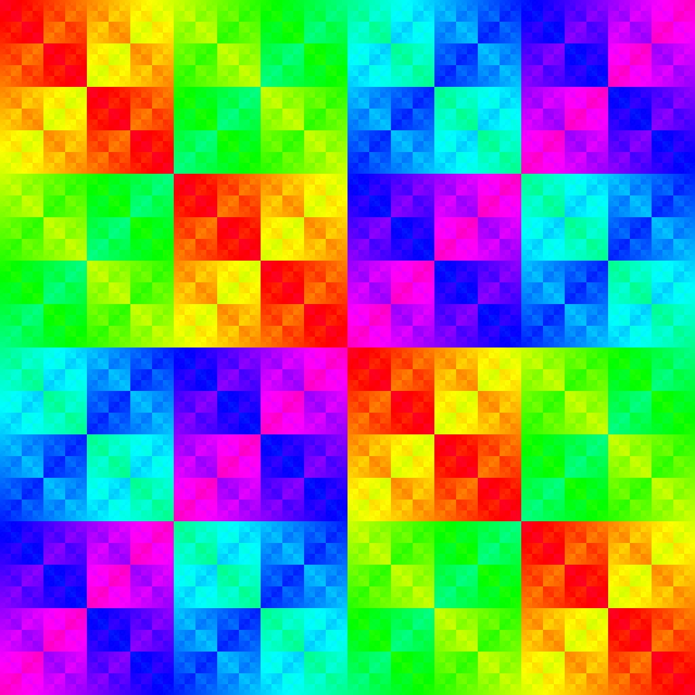

|
Darrion Thornburgh Hi! My name is Darrion, and I am a Ph.D. student at Vanderbilt University in the program of mathematics. I completed my undergraduate studies Bard College majoring in both mathematics and computer science. Email / CV / LinkedIn / GitHub / Google Scholar |

|
ResearchI have a wide variety of interests, but the work that I have done primarily lies in additive combinatorics, cryptography, and affine geometry. In particular, I am interested in studying Sidon sets in finite Boolean groups, APN functions, linear codes, and graph-theoretical connections to these topics. During my last year at Bard, I wrote my senior thesis on Sidon sets, APN functions, and their connections. Since then, I have written two seperate papers on Sidon sets in \(\mathbb{F}_2^n\), which you can find below. If you are interested in Sidon sets, APN functions, or any related research, feel free to contact me at my email above! |
Papers |
|
|
On generalizing cryptographic results to Sidon sets in
\(\mathbb{F}_2^n\)
Darrion Thornburgh Prepint, January 2025; arXiv A Sidon set \(S\) in \(\mathbb{F}_2^n\) is a set such that \(x+y=z+w\) has no solutions \(x,y,z,w \in S\) with \(x,y,z,w\) all distinct. In this paper, we prove various results on Sidon sets by using or generalizing known cryptographic results. In particular, we generalize known results on the Walsh transform of almost perfect nonlinear (APN) functions to Sidon sets. One such result is that we classify Sidon sets with minimal linearity as those that are \(k\)-covers. That is, Sidon sets with minimal linearity are those Sidon sets \(S \subseteq \mathbb{F}_2^n\) such that there exists \(k > 0\) such that for any \(p \in \mathbb{F}_2^n \setminus S\), there are exactly \(k\) subsets \(\{x,y,z\} \subseteq S\) such that \(x+y+z = p\). From this, we also classify \(k\)-covers by means of the Cayley graph of a particular Boolean function, and we construct the unique rank \(3\) strongly regular graph with parameters \((2048, 276, 44, 36)\) as the Cayley graph of a Boolean function. Finally, by computing the linearity of a particular family of Sidon sets, we increase the best-known lower bound of the largest Sidon set in \(\mathbb{F}_2^{4t+1}\) by \(1\) for all \(t \geq 4\). |
 The Cayley table of \(\mathbb{F}_2^n\) represents identifications in the Cayley graph of a Boolean function. |
|
Uniform exclude distributions of Sidon sets
Darrion Thornburgh Prepint, July 2024; arXiv A Sidon set \(S\) in \(\mathbb{F}_2^n\) is a set such that the pairwise sums of distinct points are all distinct. The exclude points of a Sidon set \(S\) are the sums of three distinct points in \(S\), and the exclude multiplicity of a point in \(\mathbb{F}_2^n \setminus S\) is the number of such triples in \(S\) it is equal to. We call the function \(d_S \colon \mathbb{F}_2^n \setminus S \to \mathbb{Z}_{\geq 0}\) taking points in \(\mathbb{F}_2^n \setminus S\) to their exclude multiplicity the exclude distribution of \(S\). We say that \(d_S\) is uniform on \(\mathcal{P}\) if \(\mathcal{P}\) is an equally-sized partition \(\mathcal{P}\) of \(\mathbb{F}_2^n \setminus S\) such that \(d_S\) takes the same values an equal number of times on every element of \(\mathcal{P}\). In this paper, we use APN plateaued functions with all component functions unbalanced to construct Sidon sets \(S\) in \((\mathbb{F}_2^n)^2\) whose exclude distributions are uniform on natural partitions of \((\mathbb{F}_2^n)^2 \setminus S\) into \(2^n\) elements. We use this result and a result of Carlet to determine exactly what values the exclude distributions of the graphs of the Gold and Kasami functions take and how often they take these values. |
 Some Sidon sets such as this one have local repetition in their exclude points.
Some Sidon sets such as this one have local repetition in their exclude points.
|
|
Symmetry and Structures of APN Functions and Sidon Sets
Darrion Thornburgh. Advisors: Bob McGrail and Steven Simon Undergraduate Thesis, May 2024; Bard Digital Commons Let \(\mathbb{F}_p^n\) be the \(n\)-dimensional vector space over \(\mathbb{F}_p\). The graph \(\mathcal{G}_F = \{ (x, F(x)) : x \in \mathbb{F}_p^n \}\) of a vectorial function \(F \colon \mathbb{F}_p^n \to \mathbb{F}_p^m\) can have interesting combinatorial properties depending on varying cryptographic conditions on \(F\). A vectorial Boolean function \(F \colon \mathbb{F}_2^n \to \mathbb{F}_2^n\) is almost perfect nonlinear (APN) if there are at most \(2\) solutions to the equation \(F(x+a) + F(x) = b\) for all \(a,b \in \mathbb{F}_2^n\) where \(a \neq 0\). In this paper, we classify APN functions and important subclasses of APN functions in graph theoretical terms using the Kneser graph of all translations of \(\mathcal G_F\). We also study the properties of \(\mathcal G_F\) as a Sidon set. In particular, we introduce the notion of uniform exclude distributions, and we study APN functions whose graphs have uniform exclude distributions. |
 The adjacency matrix of \(\overline{Cay(\gamma_F)}\) where \(F(x)=x^3\) and \(n=4\).
The adjacency matrix of \(\overline{Cay(\gamma_F)}\) where \(F(x)=x^3\) and \(n=4\).
|
|
Topological methods in zero-sum Ramsey theorey
Florian Frick, Jacon Lehmann Duke, Meenakshi McNamara, Hannah Park-Kaufmann, Steven Raanes, Steven Simon, Darrion Thornburgh, Zoe Wellner Submitted, November 2023; arXiv A cornerstone result of Erdős, Ginzburg, and Ziv (EGZ) states that any sequence of \(2n − 1\) elements in \(\mathbb{Z}/n\) contains a zero-sum subsequence of length \(n\). While algebraic techniques have predominated in deriving many deep generalizations of this theorem over the past sixty years, here we introduce topological approaches to zero-sum problems which have proven fruitful in other combinatorial contexts. Our main result (1) is a topological criterion for determining when any \(\mathbb{Z}/n\)- coloring of an n-uniform hypergraph contains a zero-sum hyperedge. In addition to applications for Kneser hypergraphs, for complete hypergraphs our methods recover Olson’s generalization of the EGZ theorem for arbitrary finite groups. Furthermore, we (2) give a fractional generalization of the EGZ theorem with applications to balanced set families and (3) provide a constrained EGZ theorem which imposes combinatorial restrictions on zero-sum sequences in the original result. |
|
|
How Many Cards Should You Lay Out in a Game of EvenQuads: A
Detailed Study of Caps in AG(n,2)
Julia Crager, Felicia Flores, Timothy E. Goldberg, Lauren L. Rose, Daniel Rose-Levine, Darrion Thornburgh, Raphael Walker La Matematica, May 2023; We define a cap in the affine geometry \(\mathrm{AG}(n,2)\) to be a subset in which any collection of \(4\) points is in general position. In this paper, we classify, up to affine equivalence, all caps in \(\mathrm{AG}(n,2)\) of size \(k \leq 9\). As a result, we obtain a complete characterization of caps in dimension \(n \leq 6\), in particular complete and maximal caps. Since the EvenQuads card deck is a model for \(\mathrm{AG}(6,2)\), as a consequence, we determine the probability that an arbitrary \(k\)-card layout contains a quad. |
 A standard EvenQuads deck of cards.
A standard EvenQuads deck of cards.
|
Web-Based Tools |
|
|
Projective Set Visualizer (ProSet Vis)
Darrion Thornburgh Febuary 2023; Source In short, this online web-based tool visualizes sum-free sets in \(\mathbb{F}_2^n \setminus \{0\}\) for \( 2 \leq n \leq 14\). Projective Set is a card game, similar to the card game Set, and the cap sets in Projective Set are exactly the sum-free sets in \(\mathbb{F}_2^6 \setminus \{0\}\). The Projective Set Visualizer (ProSet Vis) is an online web-based tool forked from the Qap Visualizer that aids in constructing cap sets in Projective Set. |
|
|
Original template by Jon Barron. |